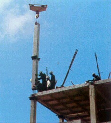
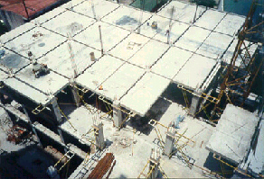
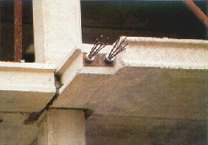

Concreto prefabricado preesforzado [PCPS]
Similar al concreto prefabricado, pero los miembros del sistema resistente a cargas laterales son preesforzados o post tensionados con cables o varillas de acero.

Levantamiento de columnas de concreto prefabricado, Serbia (R. Dimitrijevic)

Edificio de concreto prefabricado preesforzado en construcción, en el cual se observan forjados prefabricados y columnas, Serbia (R. Dimitrijevic)

Anclaje de cables horizontales de preesfuerzo en la unión columna-forjado, Serbia (R. Dimitrijevic)